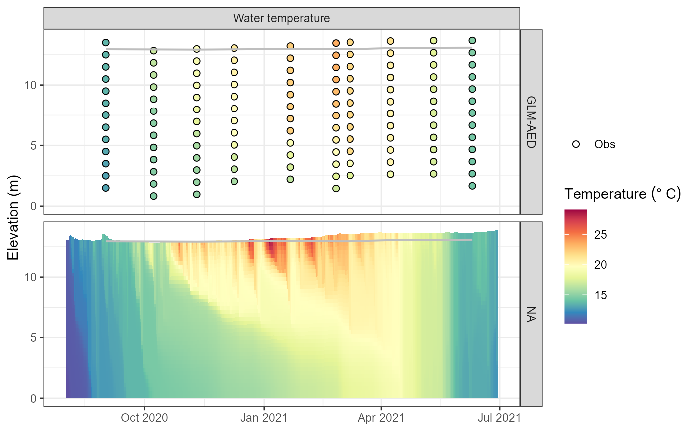

Run aquatic model ensemble
run_aeme.RdRun aquatic model ensemble
Usage
run_aeme(
aeme,
model,
return = TRUE,
ens_n = 1,
model_controls = NULL,
nlev = NULL,
verbose = FALSE,
debug = FALSE,
timeout = 0,
parallel = FALSE,
ncores,
check_output = FALSE,
path = "."
)Arguments
- aeme
aeme; object.
- model
vector; of models to be used. Can be `dy_cd`, `glm_aed`, `gotm_wet`.
- return
logical; return model output within an `aeme` object? Defaults to TRUE.
- ens_n
numeric; ensemble number to allocate to model output which is loaded. Defaults to 1.
- model_controls
dataframe; of configuration loaded from "model_controls.csv".
- nlev
numeric; number of levels to return in model output. If NULL, calculates number of levels based on the `model_layer_structure`.
- verbose
logical; print model output to console. Defaults to FALSE.
- debug
logical; write debug log (Only DYRESM). Defaults to FALSE.
- timeout
timeout in seconds, ignored if 0. This is a limit for the elapsed time running
commandin a separate process. Fractions of seconds are ignored.- parallel
logical; run models in parallel. Defaults to FALSE.
- ncores
integer; number of cores to use for parallelization. Defaults to `min(c(detectCores() - 1, length(model)))`.
- check_output
logical; check model output after running? Defaults to FALSE.
- path
filepath; where input files are located relative to `config`.
Examples
aeme_file <- system.file("extdata/aeme.rds", package = "AEME")
aeme <- readRDS(aeme_file)
path <- tempdir()
model_controls <- get_model_controls()
model <- c("glm_aed")
aeme <- build_aeme(path = path, aeme = aeme, model = model,
model_controls = model_controls, ext_elev = 5)
#> Building simulation for Wainamu [2025-07-16 15:57:15]
#> Using observed water level
#> Missing values in observed water level
#> Using constant water level
#> Correcting water balance using estimated outflows (method = 2).
#> Calculating lake level using lake depth and a sinisoidal function.
#> Warning: 'C:\Users\RUNNER~1\AppData\Local\Temp\RtmpQN8bK6\45819_wainamu' already exists
#> Building GLM3-AED2 model for lake wainamu
aeme <- run_aeme(aeme = aeme, model = model, path = path)
#> Running models... (Have you tried parallelizing?) [2025-07-16 15:57:16]
#> GLM-AED running... [2025-07-16 15:57:16]
#> GLM-AED run successful! [2025-07-16 15:57:16]
#> Model run complete![2025-07-16 15:57:16]
#> Retrieving and formatting temp for model glm_aed
#> Retrieving and formatting salt for model glm_aed
plot_output(aeme, model = model)
#> Warning: Removed 82 rows containing missing values or values outside the scale range
#> (`geom_col()`).
